|
|

|
| Knowledge Analysis on Process Models | |
Demo
Kanal demo video
Start with the SHAKEN Login Screen. KANAL is currently used within an end-to-end KA system called SHAKEN. 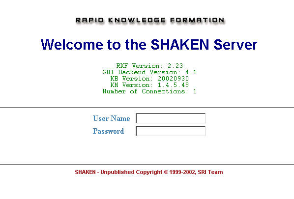
You can start KANAL by selecting "Test Knowledge" from the SHAKEN main window. 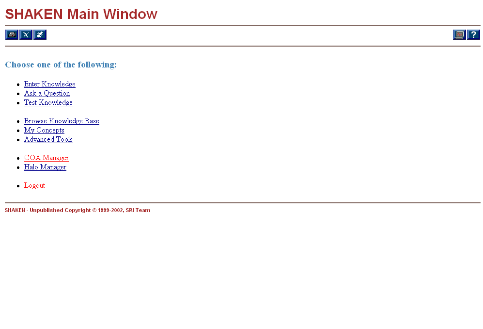
You can select or search for the name of the process model you want to test. 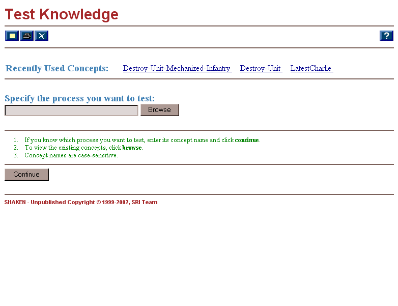
Before you run KANAL, you can specify the effects you intend to achieve from the process model. You can either check if intermediate steps achieve intended effects or the overall plan (process model) achieve the effects using these. 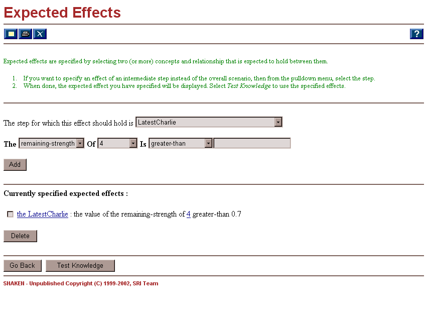
This window shows the KANAL results. The summary section at the top lists the steps where KANAL found some errors (or warnings). By clicking each step listed on the left, you can see the detailed results from KANAL. This destroy step seems fine. You can see that an expected effect (remaining strength of unit 4 being greater than 0.7) was not achieved. 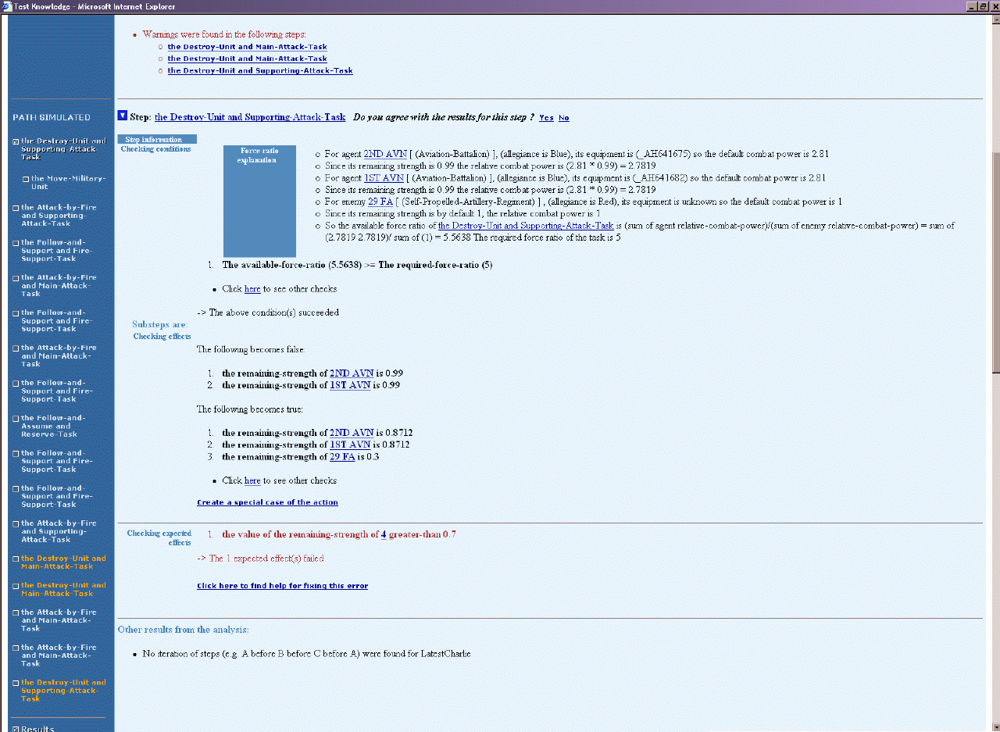 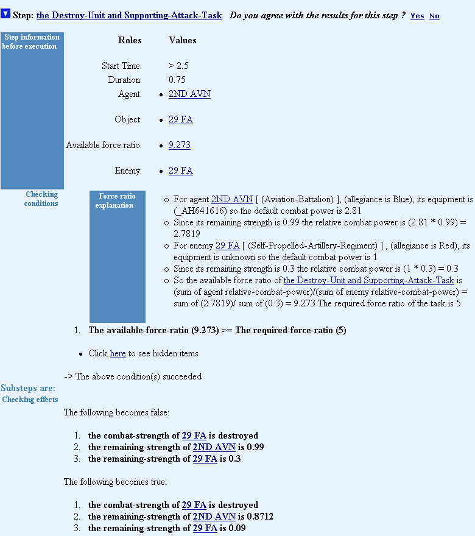
KANAL found a failed precondition: the available force ratio is not greater than or equal to 5. The "force ratio explanation" provides the details. 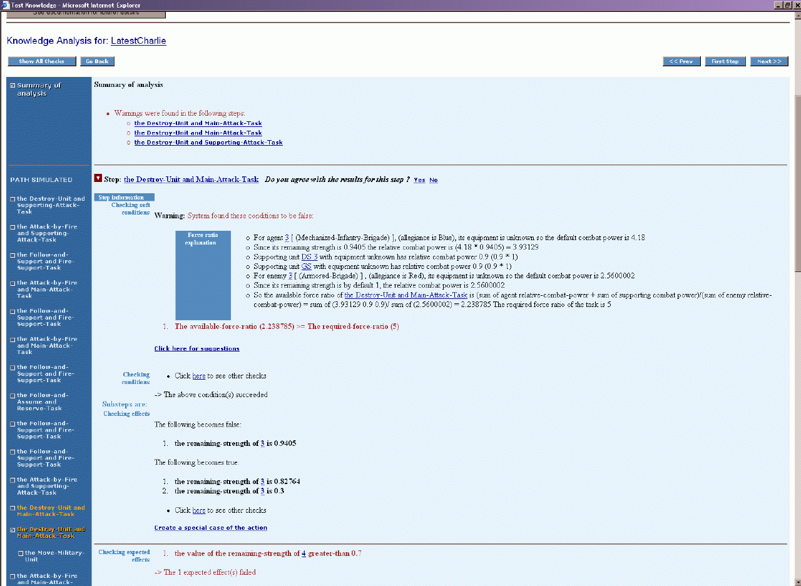
KANAL provide several general suggestions for this problem. (In other cases, KANAL can produce more specific suggestions on how to fix the error). In this case user choose to create a special case of the Destroy-Unit to address the given situation. 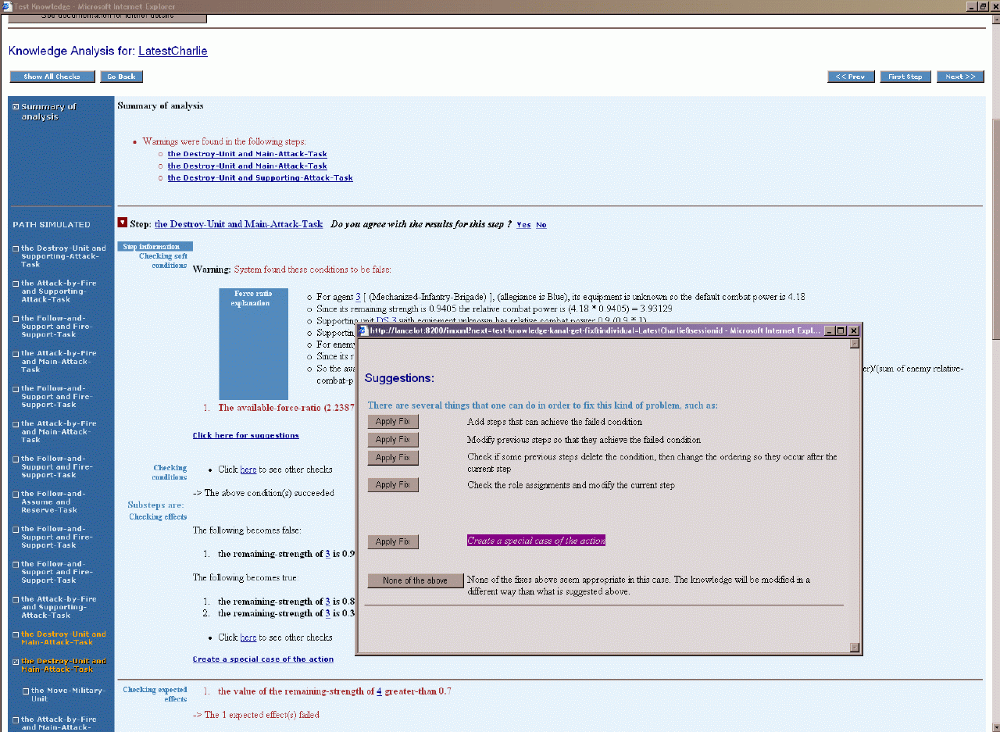
KANAL provide several general suggestions for this problem. (In other cases, KANAL can produce more specific suggestions on how to fix the error). In this case user choose to create a special case of the Destroy-Unit (called Destroy-Unit-Mechanized-Infantry) to address the given situation. 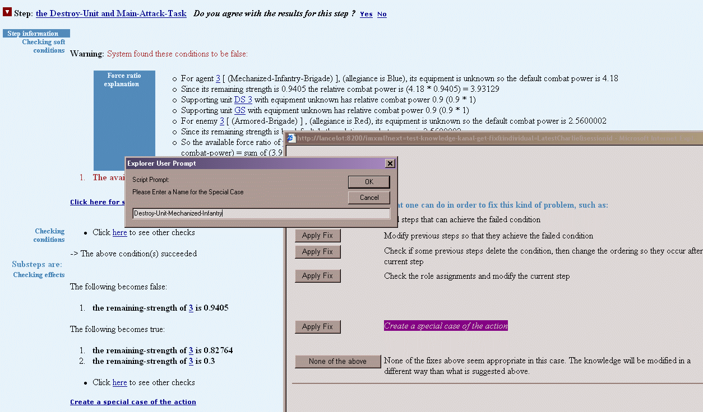
User makes agent being Mechanized-Infantry-Brigade as the trigger (defining criteria) of the new action definition. This special case of Destroy-Unit will be used when its agent is a Mechanized-Infantry-Brigade 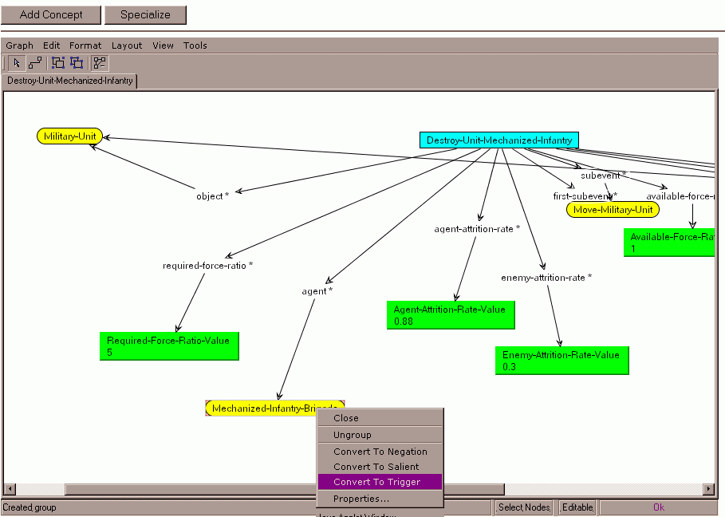
In this case the Required-Force-Ratio-Value is 2 instead of 5. 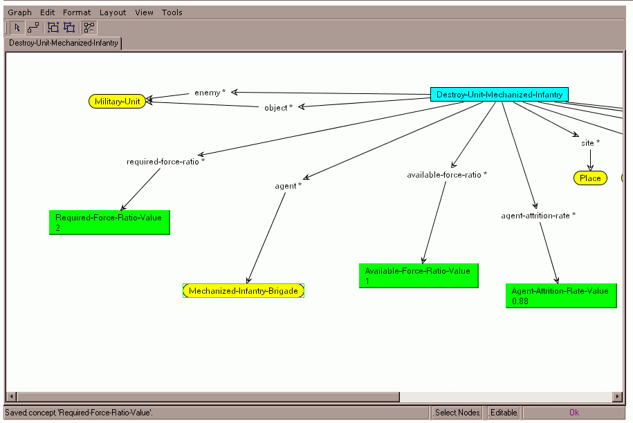
User tests the same plan with the new definition (Destroy-Unit-Mechanized-Infantry) and the warning is now gone. 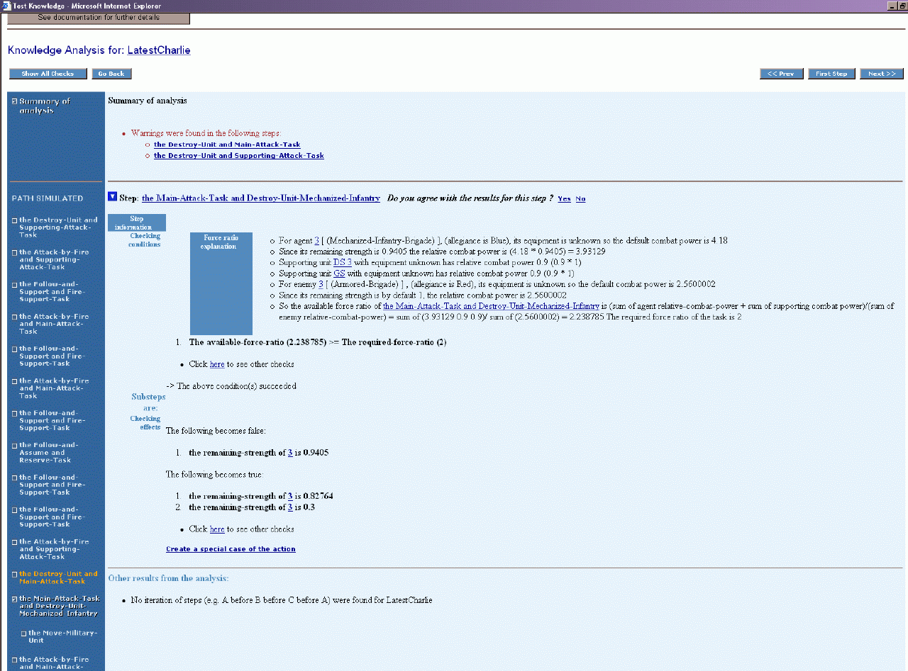
Summary of state transition: KANAL generates a table for each property that chanages over time in order to visualize changes made objects in a plan. 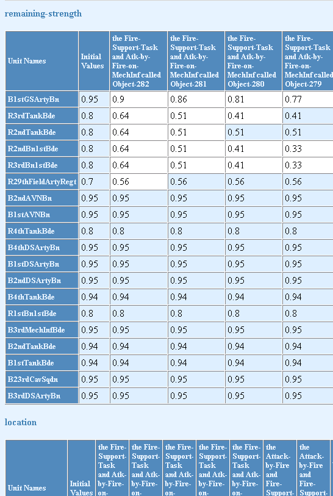